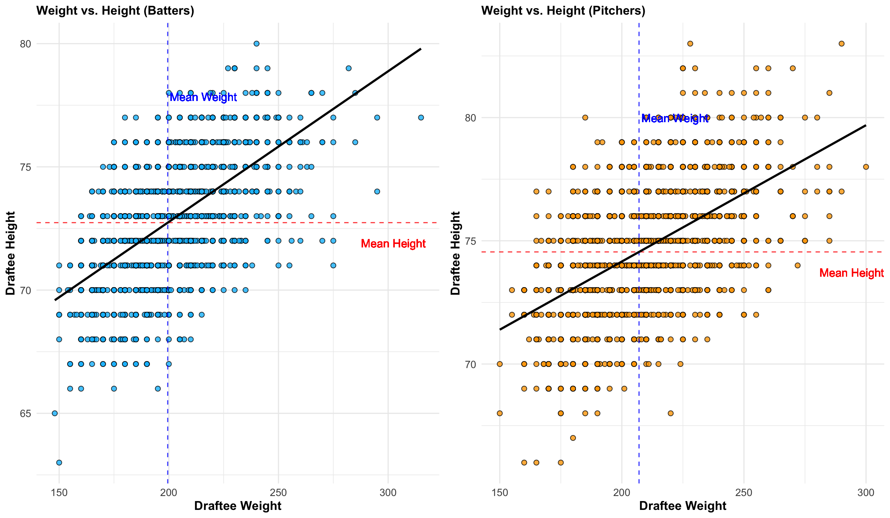

3.1 Relationship Between Drafting High School and College Level Players
We made a barplot that displayed the percentage of draftees by round, with colors indicating high school status at the time of drafting, in order to examine the relationship between draft round and high school status. This barplot analysis shows that a much less number of high school athletes are selected as the first ten rounds go.
Code
library(tidyverse)library(data.table)draft_info <-fread('clean_draft.csv')draft_info <- draft_info %>%mutate(mlb_years =ifelse(mlb_played_first ==0& mlb_played_last ==0, 0, (mlb_played_last - mlb_played_first) +1 ) )# Create a dataframe with state naming datastate_data <-data.frame(names = state.name, abbreviation =tolower(state.abb))draft_info <- draft_info left_join(state_data, by =c("home_state"="abbreviation")) |>select(-home_state) |>rename(home_state = names) |>drop_na(home_state)
Error in left_join.data.frame(state_data, by = c(home_state = "abbreviation")): argument "y" is missing, with no default
Code
players_per_round <- draft_info |>filter(as.integer(pick_round) %in%c(1:10)) |>drop_na(high_school) |>group_by(pick_round) |>summarise(drafted_players =n()) |>ungroup() |>mutate(pick_round =factor(pick_round, levels =c(1:10))) |>arrange(pick_round)# Subset the data to only players drafted in the first 10 roundsfirst_10 <- draft_info |>filter(as.integer(pick_round) %in%c(1:10)) |>drop_na(high_school) |>group_by(pick_round, high_school) |>summarise(num_players =n()) |>arrange(desc(num_players)) |>ungroup() |>inner_join(players_per_round, by ="pick_round") |>mutate(pick_round =factor(pick_round, levels =c(1:10)),high_school =as.factor(ifelse(high_school =="Yes", "High School", "College") ),percent =round(num_players / drafted_players *100, 2) )|>arrange(pick_round)hs_by_round_plot <-ggplot(first_10, aes(x = pick_round, y = percent, fill = high_school)) +geom_bar(stat ="identity", position ="stack") +labs(y ="Percent of Draftees", x ="Draft Round", title ="Percent of Draftees by Pick and Round",fill ="School Level") +theme_minimal() +geom_text(aes(label =paste(percent, "%", sep ="")), position =position_stack(vjust =0.5), size =4) +theme(plot.title =element_text(size =12, face ="bold"),axis.title =element_text(size =12, face ="bold"),axis.text =element_text(size =10),legend.title =element_text(size =10, face ="bold"),legend.text =element_text(size =10))hs_by_round_plot
Percentage of Players by Round and School Level
3.2 How Long to Play First MLB Game
We determined the number of years between a player’s first MLB game and the year of their draft in order to examine the number of years prior to a draftee playing their first MLB game. The number of years it takes for a batting draftee to play in Major League Baseball is comparable to that of a pitching draftee, according to an analysis of these two histograms. The majority of players in both datasets play their first game three to five years after being drafted, making them slightly tilted to the right.
Code
library(gridExtra)
Attaching package: 'gridExtra'
The following object is masked from 'package:dplyr':
combine
Code
bat_draft_df <-fread('bat_subset.csv')pitch_draft_df <-fread('pitch_subset.csv')#Created a new variable for each dataset that gives the number of years it took for a player #to play their first MLB gamebat_draft_df$DifferenceYearsDraftFGPlayed <- bat_draft_df$mlb_played_first - bat_draft_df$yearpitch_draft_df$DifferenceYearsDraftFGPlayed <- pitch_draft_df$mlb_played_first - pitch_draft_df$yearplot1 <-ggplot(bat_draft_df, aes(x = DifferenceYearsDraftFGPlayed)) +geom_histogram(binwidth =0.5, fill ="skyblue", color ="black", alpha =0.8) +labs(title ="Years for Batting Draftee to Play First MLB Game", x ="# of Years", y ="Frequency") +theme_minimal() +theme(plot.title =element_text(size =12, face ="bold"),axis.title =element_text(size =12, face ="bold"),axis.text =element_text(size =10),legend.title =element_text(size =10, face ="bold"),legend.text =element_text(size =10))plot2 <-ggplot(pitch_draft_df, aes(x = DifferenceYearsDraftFGPlayed)) +geom_histogram(binwidth =0.5, fill ="orange", color ="black", alpha =0.8) +labs(title ="Years for Pitching Draftee to Play First MLB Game", x ="# of Years", y ="Frequency") +theme_minimal() +theme(plot.title =element_text(size =12, face ="bold"),axis.title =element_text(size =12, face ="bold"),axis.text =element_text(size =10),legend.title =element_text(size =10, face ="bold"),legend.text =element_text(size =10))grid.arrange(plot1, plot2, nrow =1)
Histograms of Years before First MLB Game
3.3 Weight vs Height
Additionally, we looked into the correlation between height and weight for both pitching and hitting draftees. In addition to mapping the features of each individual, we also plotted the mean weight/height and carried out a basic linear regression to ascertain the general trend by generating a scatterplot of the two datasets. The mean weight for hitting draftees is marginally lower than the mean weight for pitching draftees, as can be seen when comparing these two plots. Similarly, batting draftees’ average height is little lower than that of their pitching counterparts. Compared to the average pitching draftee, the average batting draftee should be a little shorter and lighter.
Code
plot1 <-ggplot(bat_draft_df, aes(x = person_weight, y=person_height)) +geom_point(fill="skyblue", shape=21, size=2, alpha =0.8) +geom_hline(yintercept =mean(bat_draft_df$person_height,na.rm=T), color ="red", linetype ="dashed", alpha =0.8) +geom_vline(xintercept =mean(bat_draft_df$person_weight,na.rm=T), color ="blue", linetype ="dashed", alpha =0.8) +geom_text(aes(x =mean(bat_draft_df$person_weight,na.rm=T) +1, y =mean(bat_draft_df$person_height,na.rm=T), label =paste("Mean Weight")), color ="blue", hjust =0, vjust =-15, alpha =0.8) +geom_text(aes(x =mean(bat_draft_df$person_weight,na.rm=T), y =mean(bat_draft_df$person_height,na.rm=T) -1, label =paste("Mean Height")), color ="red", hjust =-3, vjust =0, alpha =0.8) +geom_smooth(method ="lm", se =FALSE, color ="black", alpha =0.8) +labs(title ="Weight vs. Height (Batters)", x ="Draftee Weight", y ="Draftee Height") +theme_minimal() +theme(plot.title =element_text(size =12, face ="bold"),axis.title =element_text(size =12, face ="bold"),axis.text =element_text(size =10),legend.title =element_text(size =10, face ="bold"),legend.text =element_text(size =10))plot2 <-ggplot(pitch_draft_df, aes(x = person_weight, y=person_height)) +geom_point(fill="orange", shape=21, size=2, alpha =0.8) +geom_hline(yintercept =mean(pitch_draft_df$person_height,na.rm=T), color ="red", linetype ="dashed", alpha =0.8) +geom_vline(xintercept =mean(pitch_draft_df$person_weight,na.rm=T), color ="blue", linetype ="dashed", alpha =0.8) +geom_text(aes(x =mean(pitch_draft_df$person_weight,na.rm=T) +1, y =mean(pitch_draft_df$person_height,na.rm=T), label =paste("Mean Weight")), color ="blue", hjust =0, vjust =-16, alpha =0.8) +geom_text(aes(x =mean(pitch_draft_df$person_weight,na.rm=T), y =mean(pitch_draft_df$person_height,na.rm=T) -1, label =paste("Mean Height")), color ="red", hjust =-2.8, vjust =0, alpha =0.8) +geom_smooth(method ="lm", se =FALSE, color ="black", alpha =0.8) +labs(title ="Weight vs. Height (Pitchers)", x ="Draftee Weight", y ="Draftee Height") +theme_minimal() +theme(plot.title =element_text(size =12, face ="bold"),axis.title =element_text(size =12, face ="bold"),axis.text =element_text(size =10),legend.title =element_text(size =10, face ="bold"),legend.text =element_text(size =10))grid.arrange(plot1, plot2, nrow =1)
`geom_smooth()` using formula = 'y ~ x'
`geom_smooth()` using formula = 'y ~ x'

Scatterplots of Mean vs. Weight
3.4 Correlation Heatmap
For both player categories, the following association exists between pick round, year, height, weight, and WAR: As anticipated, a person’s height and weight are strongly correlated. There is a slight positive association between a player’s height and WAR while they are pitching, but a negative correlation when they are batting. We find that the weight of a batting draftee and WAR do not correlate, but for a pitching draftee, there is a little positive correlation.
#title(sub = "Plot 6: Correlation Plot of Pitchers", line=4.5)
3.5 State Frequency Map
We create a frequency heatmap to examine which state generates the most number of draftees: The majority of athletes selected come originally from California, with Texas and Florida being the other two main home states, according to our state map [see Figure 5]. We can blame this tendency on the weather since, in contrast to the East, Midwest, and Northwest, these states often have warmer temperatures and little to no snow, allowing people to play baseball year-round and giving youth leagues more seasonal flexibility. Additionally, these states have sizable populations, which may help to explain why the majority of draftees come from them.
Code
library(ggplot2)library(dplyr)library(maps)
Attaching package: 'maps'
The following object is masked from 'package:purrr':
map
Code
# State frequency datastate_freq <-table(draft_info$home_state)# State mapping state_map <-data.frame(abbrev =c("al", "ak", "az", "ar", "ca", "co", "ct", "de", "fl", "ga", "hi", "id", "il", "in", "ia", "ks", "ky", "la", "me", "md", "ma", "mi", "mn", "ms", "mo", "mt", "ne", "nv", "nh", "nj", "nm", "ny", "nc", "nd", "oh", "ok", "or", "pa", "ri", "sc", "sd", "tn", "tx", "ut", "vt", "va", "wa", "wv", "wi", "wy"),full =c("alabama", "alaska", "arizona", "arkansas", "california", "colorado", "connecticut", "delaware", "florida", "georgia", "hawaii", "idaho", "illinois", "indiana", "iowa", "kansas", "kentucky", "louisiana", "maine", "maryland", "massachusetts", "michigan", "minnesota", "mississippi", "missouri", "montana", "nebraska", "nevada", "new hampshire", "new jersey", "new mexico", "new york", "north carolina", "north dakota", "ohio", "oklahoma", "oregon", "pennsylvania", "rhode island", "south carolina", "south dakota", "tennessee", "texas", "utah", "vermont", "virginia", "washington", "west virginia", "wisconsin", "wyoming"))# Convert abbreviations to full state namesstate_freq_df <-data.frame(region =tolower(names(state_freq)),frequency =as.numeric(state_freq)) %>%left_join(state_map, by =c("region"="abbrev")) %>%mutate(region =ifelse(is.na(full), region, full)) %>%filter(!(region %in%c("hawaii", "alaska"))) # U.S. map datastates <-map_data("state")map.df <-merge(states, state_freq_df, by ="region", all.x =TRUE) %>%arrange(order)map.df$frequency[is.na(map.df$frequency)] <-0home_heat_map <-ggplot(map.df, aes(x = long, y = lat, group = group)) +geom_polygon(aes(fill = frequency)) +geom_path(color ="black", size =0.1) +scale_fill_gradient(low ="white", high ="darkred", name ="Players Drafted") +labs(title ="Heat Map of Drafted Players") +theme_minimal() +theme(plot.title =element_text(hjust =0.5, size =12, face ="bold"),legend.title =element_text(size =10, face ="bold"),legend.text =element_text(size =10))
Warning: Using `size` aesthetic for lines was deprecated in ggplot2 3.4.0.
ℹ Please use `linewidth` instead.
Code
home_heat_map
Frequency Heatmap of Players per State
3.6 Relationship between Time Played in MLB VS WAR
We create the following scatterplot to investigate the relationship between a player’s career length and WAR: The duration of a player’s career does not always translate into a high WAR, as seen by the comparison of each player’s total MLB time played and WAR [see Figure 6]. There does appear to be an upward trend, though, which makes logical given that we anticipate a player to win more the longer they play.
Code
players <-bind_rows(bat_draft_df, pitch_draft_df) |>arrange(desc(fWAR)) |>distinct(person_id, .keep_all = T)players$time_played <- (players$mlb_played_last - players$mlb_played_first) +1ggplot(players, aes(x = time_played, y=fWAR)) +geom_point(fill="white", shape=21, size=2, alpha =0.8) +geom_hline(yintercept =mean(players$fWAR,na.rm=T), color ="red", linetype ="dashed", alpha =0.8) +geom_vline(xintercept =mean(players$time_played,na.rm=T), color ="blue", linetype ="dashed", alpha =0.8) +geom_text(aes(x =mean(players$time_played,na.rm=T)+0.5, y =mean(players$fWAR,na.rm=T)+40, label =paste("Mean Time")), color ="blue", hjust =0, vjust =-10, alpha =0.8) +geom_text(aes(x =mean(players$time_played,na.rm=T)+8, y =mean(players$fWAR,na.rm=T)+5, label =paste("Mean WAR")), color ="red", hjust =-4, vjust =0, alpha =0.8) +labs(title ="Total Time in MLB vs. WAR", x ="Total Time Played in MLB", y ="Wins Above Replacement") +theme_minimal() +theme(plot.title =element_text(size =12, face ="bold"),axis.title =element_text(size =12, face ="bold"),axis.text =element_text(size =10),legend.title =element_text(size =10, face ="bold"),legend.text =element_text(size =10))
Warning in geom_text(aes(x = mean(players$time_played, na.rm = T) + 0.5, : All aesthetics have length 1, but the data has 7254 rows.
ℹ Please consider using `annotate()` or provide this layer with data containing
a single row.
Warning in geom_text(aes(x = mean(players$time_played, na.rm = T) + 8, y = mean(players$fWAR, : All aesthetics have length 1, but the data has 7254 rows.
ℹ Please consider using `annotate()` or provide this layer with data containing
a single row.